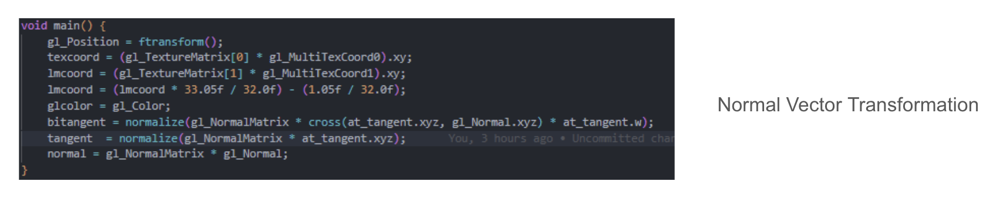
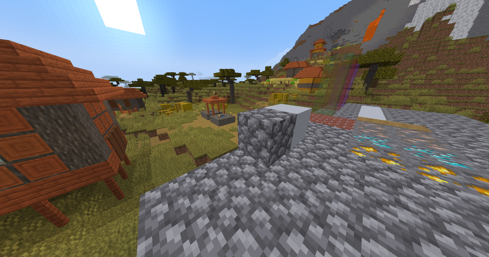
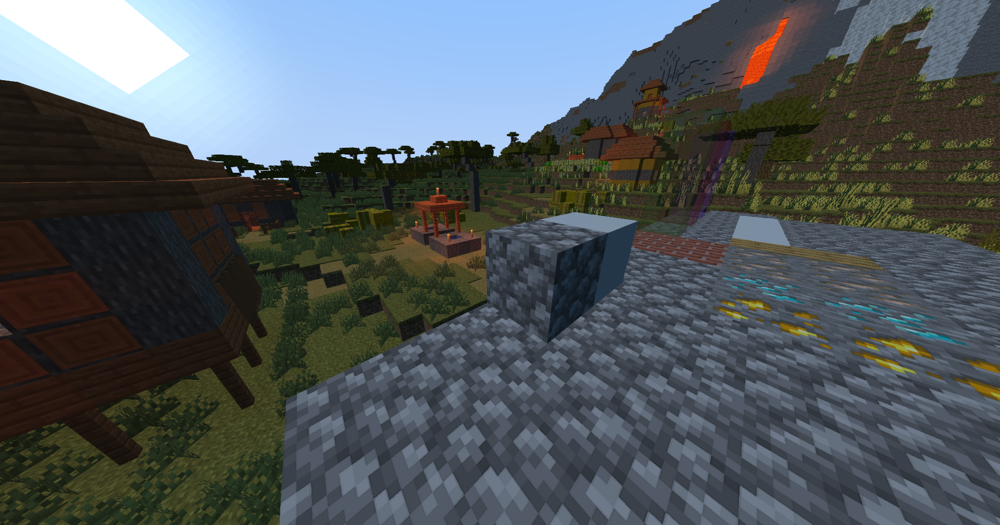

|
Minecraft was designed to be a lightweight game and was designed to have very simple textures and lighting.
For example, the game does not take advantage of the normal map of each block texture, resulting in a flat texture
for blocks like cobblestone or furnace. Also, the game treats sunlight as an ambient light, and blocks facing away from the sun
will have the same brightness as the blocks facing the sun. Our team wanted to enhance lighting and textures in minecraft so scenes look realistic.
We were able to bring in normal shading, where blocks facing away from the sun will look darker than blocks facing the sun.
We added shadows, and added realism through the shadows by accounting for shadow distortion and transparent blocks.
We have used the normal maps of block textures and parallelex mapping to add depth of field to the textures of blocks.
Finally, we used specular highlights to make the reflection of sunlight in certain blocks more shiny and realistic.
Normal shading uses the normal vector of the surface of a block and the suns direction to calculate the contribution of the sunlight in each block. if the surface normal is facing the sun, the sunlight contribution of the block will be close to one. If a block is facing away from the sun (at 90 degrees), the sunlight contribution will be zero.
|
|
We added a small bit of ambient light to make sure that blocks which face away from the sun doesn't look completly dark.

|
Simply put, we were able to extract the world coordiante, texture coordinate, and the normal of the surface from the vertex shader. In the fragment shader, we can extract the texture of the biome and put the normal vector in the 0~1 range.

|
We finally obtain the texture of the sample coordinate and we factor in the sun's contribution (normdotL), into the overall light calculation.

|
The goal of Specular Highlights is that objects will look brighter from certain angles and this brightness will diminish as you move away. We achieve this through taking the dot product between the view vector (ray pointing to the eye from the sample) and the light reflected off of the sample point. We can make this effect more pronounced by having a large shinyness factor. The value of the dot product multiplying will increase exponentially. We also take into account the matness of the object. We won't expect wood to absorb light like what glass would.
[Todo]
To generate shadows, we first take the clip space coordinates that includes the depth texture taken from the eyes point of view, and convert it to clipspace -> view space -> worldspace -> shadowspace.

|
We use lots of optifine primitives to go from texture to shadowspace. Depth texture from the eye's point of view is given by optifine as depth. We then multiply it by the inverse projection matrix and divide by vieW.w to get to viewspace. To get to worldspace we multiply by the gbufferModelViewInverse. Using the shadowView and shadowProjection matrix, we can transfer worldspace coordinates to shadow space. We make sure the samplecoords for the shadow stays in the (0, 1) range.

|
Shadows used in minecraft often don't account for falloff at the edges. The mostly look black and white. Ideally, we want the shadow to be realistic (not black and white). We would ideally like the shadow's color to blend in with the background along the edges. To achieve this, we use a tactic similar to supersampling. When we sample shadow texture, we sample in a small box (shadow samples x shadow samples) wide. We then average the colors, giving us a smooth shadow transition.

|
Another factor we take into account is the distance of the shadow in relation to the player. We calculate the centerDistance, which is the distance of the shadow coordinate to the player and distort the position in a way that the shadows get smaller as they get further away from the player.

|
The final consideration for shadows is transparent objects. We want the shadow to be textured differently (combine some colors from the environment) if the blocks causing the shadodw are transparent. Optifine gives us shadowtex1, which only includes shadow textures for non-transparent blocks. We can also sample the block color with the texture of the shadow color. We can take a mix of the transmitted color and the original shadow color. Realize that shadowVisibility1 will be zero if the object is not transparent.
|  |
[TODO]
[TODO]
Overall, we were able to learn how to apply concepts we learned in class (Blinn Phong reflection, lighting, and glsl) and applying it to a real world video game. There were optifine primitives we had to read up on, and we had to learn how to translate between object space, world space, shadow space, and tangent space. We also learned to critically think about shading problems and create solutions on how to make the scene look good. One example of this would be accounting for the shadow edge falloff, so that the shadows don't look blocky. We took a good look at the materials learned in class and learned to use other frameworks to apply our knowledge into real world problems.
|  |  |
| Vanilla | With Shader |
|---|
https://optifine.readthedocs.io/shaders_dev/uniforms.html#general-uniforms